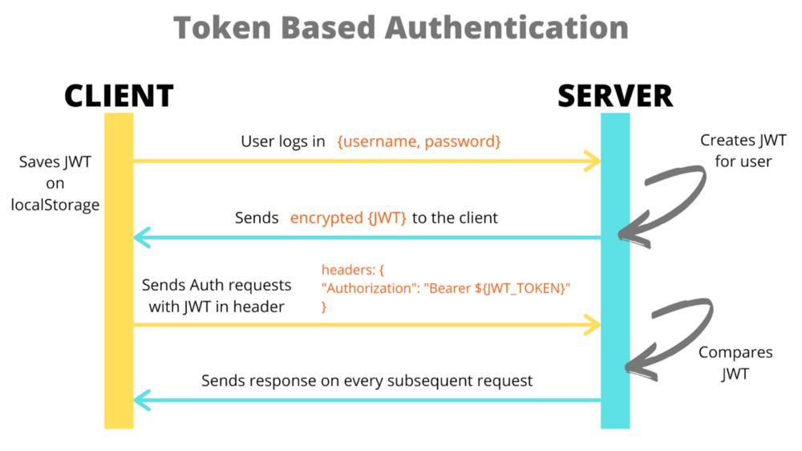
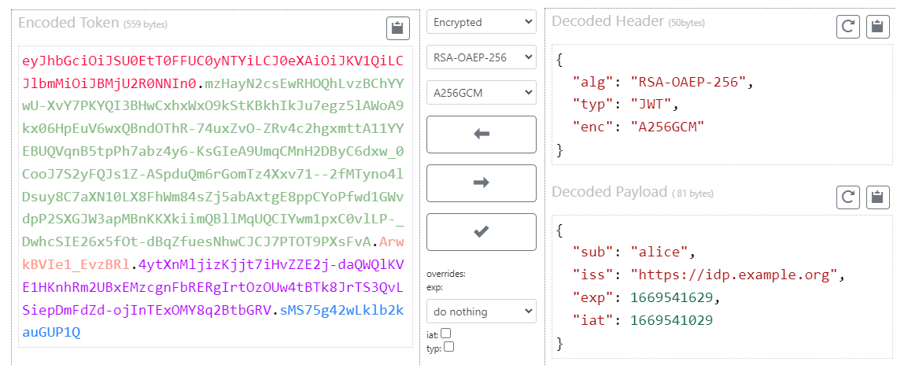

[Network] JWT 알아보기 (w. JWE, JWS)
서론
CS 스터디에서 10월 8일 발표한 JWT에 대해 정리한 문서를 블로그에 공유하고자 한다.
JWT 인증 방식이 무엇인가요?
JWT 인증 방식이란, 두 당사자 간 전송할 클레임(claim) 을 나타내는 JWT(JSON 웹 토큰)을 통해 사용자를 인증하는 방식을 말합니다.
JWT는 공간이 제약된 환경, 예를 들어 HTTP Authorization 헤더, URI 쿼리 매개변수와 같은 환경에서 클레임들을 주고 받을 수 있도록 간결화하는 것이 목적입니다.
클레임:키-값 쌍으로 이뤄진 데이터
JWT?
JWT(JSON Web Token)는 당사자 간 정보를 JSON 객체로 안전하게 전송하기 위한 간결하고 독립적인 방법을 정의하는 개방형 표준(RFC 7519)입니다.
JWT는 정보(클레임 집합)를 선택적 서명(JWS 구조로 인코딩)/암호화(JWE 구조로 인코딩)한 JSON 객체라고 할 수 있으며, 이 JSON 객체는 0개 이상의 클레임을 가질 수 있습니다.

출처: How to Sign and Validate JSON Web Tokens – JWT Tutorial (freecodecamp.org)
주로 인증 과정에서 사용자가 자격 증명을 통해 로그인에 성공하면 JWT가 반환되며, 사용자가 보호된 경로/리소스에 접근할 경우 Bearer 스키마를 통해 Authorization 헤더에 JWT를 첨부해 요청해야 합니다.
즉, 다음과 같은 형태를 띄어야 합니다.
Authorization: Bearer <token>
JWE(JSON Web Encryption) RFC 7516

- JWT 내용을 디지털 방식으로 암호화 함.
- 따라서
무결성 검증및콘텐츠 보호에 사용할 수 있음. - 또한
인증된 암호화(AUtehmticated Encryption)를 통해 평문의기밀성과무결성,JWE 보호 헤더(JWE Protected Header)의무결성을 보장.
- 따라서
- 본질적으로 콘텐츠를 암호화 하므로, `HTTP 상에서 사용할 수 있음.
- 일반적인 구조
<Base64URL 인코딩 된 UTF8 인코딩 형태의 JWE Protected Header>.<Base64URL 인코딩 된 JWE Encrypted Key>.<Base64URL 인코딩 된 JWE Initialization Vector>.<Base64URL 인코딩 된 JWE Ciphertext>.<Base64URL 인코딩 된 JWE Authentication Tag>
- 과정
JWT Protected Header를 선언한다.- 헤더는 다음 두 가지를 갖고있다.
alg:콘텐츠 암호화 키(Content Encryption Key)를 어떤 알고리즘을 사용해 암호화할지 나타냄.enc: 어떤 알고리즘을 사용해인증된 암호화(AUtehmticated Encryption)를 수행할지 지 나타냄.인증된 암호화는 평문에 대해 수행되어,암호화된 텍스트(ciphertext)와인증 태그(Authentication Tag)를 생성함.
- 이후 이를
UTF-8로 인코딩 한 뒤,Base64URL로 인코딩 한다.
- 랜덤한
CEK(콘텐츠 암호화 키)를 생성한다. CEK를RSAES-OAEP알고리즘을 사용해 수신자의공개키로 암호화하여,JWE Encrypted Key를 생성한 뒤,Base64URL인코딩을 수행한다.- 랜덤한
JWE Initialization Vector를 생성한 뒤, Base64URL 인코딩을 수행한다. - 평문에
AES GCM알고리즘을 사용해인증된 암호화를 수행한다.CEK를암호화 키로 사용하며, 추가로JWE Initialization Vector,AAD역시 사용한다.- 이를 통해
Ciphertext(암호문)와 128비트JWE Authentication Tag를 만들어내고, 이들에 대해 Base64URL 인코딩을 수행한다.
JWS(JSON Web Signature) RFC 7515

- 디지털 서명을 통해 발신자-수신자 간 전송되는 JWT 내용이
변조되지 않음을보장하는JWT - 일반적으로
JWT 인증에 사용되는 형태는JWS라고 할 수 있음 - 특징
내용(클레임)은 타인도 읽을 수 있음.- 따라서 비밀번호와 같은
민감 데이터를전송하는데 사용해서는 안 됨.
- 따라서 비밀번호와 같은
- 본질적으로 타인이 데이터를 읽는 것을 방지하지 않으므로,
HTTPS또는SSL를 통해 전송됨. 비밀(secret)(HMAC알고리즘) 또는공개-개인 키 쌍(RSA,ECDSA알고리즘)을 사용해서명할 수 있음.
- 일반적인 구조
<Base64URL 인코딩된 헤더>.<Base64URL 인코딩된 페이로드>.<Base64URL 인코딩된 시그니처>
JWT의 구조
JWT는 점(.)으로 구분된 세 가지 부분으로 구성되어 있음
즉, <header>.<payload>.<signature>와 같은 형태
header- 일반적으로 두 부분을 갖는
JSON 객체로, Base64URL 인코딩을 거쳐 JWT의 첫 번째 부분을 맡음.typ: 토큰의유형alg: 사용된서명 알고리즘
- 일반적으로 두 부분을 갖는
Payload- 0개 이상의
클레임을 포함하는 JSON 객체로,엔티티(주로사용자)와 추가적인 데이터로 이뤄짐. 클레임은registered,public,private세 가지 종류가 있음.registered- 미리 정의된
클레임 셋으로, 필수는 아니지만 권장되는 사항으로 유용하며 상호 운용 가능함.iss(issuer): JWT를발급한 주체를 식별sub(subject): JWT의 주제가 되는주체(인증가능한 엔티티).- JWT의 클레임은 일반적으로
subject에 대한 진술임. - 또한, 발행자의 컨텍스트상에서 또는 전역적으로
subject는 고유해야함.
- JWT의 클레임은 일반적으로
aud(Audience): JWT가의도하는 수신자를 식별- 즉, JWT를 처리하는 각 주체들은
aud클레임 값으로 자신을 식별해야 함.
- 즉, JWT를 처리하는 각 주체들은
exp(expiration time): JWT 처리가 허용되어서는 안되는만료 시간(또는 그 이후)nbf(not before): JWT 처리가 허용되어서는 안되는이전 시간iat(issued at): JWT가발행된 시점을 식별jti(jwt id): JWT의고유 식별자
- 미리 정의된
public- JWT를
사용하는 측에서마음대로 정의할 수 있음 - 다만 충돌 방지를 위해선
IANA JSON Web Token Registry에 정의되어 있거나,충돌 방지 네임스페이스가 포함된 URI로 정의해야 함.
- JWT를
private사용자 지정 클레임으로, 사용에 동의한 당사자 간에 정보 공유하기 위해 만듦
- 0개 이상의
signature- Base64 인코딩된
헤더,페이로드,비밀을 가져와헤더에 지정된 알고리즘으로서명한 값- 예를 들어,
HMAC SHA256알고리즘으로 서명하는 경우 다음과 같음HMACSHA256(base64UrlEncode(header) + "." + base64UrlEncode(payload), secret)
- 예를 들어,
서명은 메시지가도중에 변경되진 않았는지 확인하는데 사용개인 키로 서명된 토큰은 JWT 발신자가본인이 맞는지 확인할 수도 있음
- Base64 인코딩된
JWT의 장점
SSO와 같은 시스템에서 주로 사용되는 또 다른 인증 포맷인 SAML 토큰 대비
더 간결하다
JSON은XML보다 장황하지 않아 웬만한 경우JWT가SAML 토큰보다 작음.SAML(Security Assertion Markup Language):SSO와 같은 인증 방식에서 사용되는 포맷으로, XML을 기반으로인증 대상자가 누구인지알려주는 표준화된 방법
- 따라서
HTML및HTTP환경에서 전달하기 용이함
더 안전하다
- JWT는 서명을 위해
X.509 인증서형식의공개-개인키 쌍을 사용하거나,HMAC 알고리즘을 사용해공유된 비밀로 대칭적 서명이 가능 SAML 토큰은 JWT와 같이공개-개인키 쌍을 사용할 수 있지만, 취약점없이XML 디지털 서명을 통해 XML에 서명하는것은JSON 서명의단순성에 비하면 매우 어려움
더 대중적이다
JSON parser는JSON이 객체에 직접 매핑되므로 대부분의 프로그래밍 언어에서일반적임- 반면
XML은 자연스러운문서-to-객체매핑이 없음- 따라서
SAML assertion대비 작업이 더 쉬움
- 따라서
Signature는 어떻게 만들어지나요?
- Base64 인코딩된
헤더,페이로드,비밀을 가져와헤더에 지정된 알고리즘으로signature를 만듦- 예를 들어,
HMAC SHA256알고리즘으로 서명하는 경우 다음과 같음HMACSHA256(base64UrlEncode(header) + "." + base64UrlEncode(payload), secret)
- 예를 들어,
만약 Access Token이 탈취되면, 어떻게 대응할 수 있을까요? / 반대로 Refresh Token이 탈취되면, 어떻게 대응해야 할까요?
토큰이 탈취 당한 경우, 아래와 같은 방법들을 통해 토큰을 무효화해야합니다.
토큰 블랙리스트
- 유효하지 않은 것으로 간주되어야 할 토큰의
jti클레임, 또는사용자 id와 같은식별자를서버측 블랙리스트에서 관리하는 방법 - API 엔드포인트에 토큰이 제시되면, 서버는 블랙리스트에 포함되었는지 확인
- 블랙리스트는 주로
Redis와 같이 접근 속도가 빠른인-메모리 저장소에 저장하거나,DB에 저장 - 장점
세분화된 제어: 다른 토큰들에 영향 없이 특정 토큰만 무효화 할 수 있음호환성: 다양한 백엔드 환경에서 사용 가능함
- 단점
확장성: 블랙리스트에 포함된토큰 수가 증가하면블랙리스트 조회 성능이 저하될 수 있음서비스가 Stateful해짐: 블랙리스트를 계속 유지한다는 것은,상태를 계속 유지한다는 것과 사실상 동일. 이는JWT의Stateless한 특성과 상충됨
짧은 토큰 수명
- 토큰의 수명(
exp)을매우 짧게 설정해, 공격자가 액세스 토큰을 탈취해도 많이 사용할 수 없음. - 이는 공격자가
리프레시 토큰은 탈취하지 못한 경우 매우 유용 - 장점
노출 감소: 토큰이 탈취되어도공격에 노출되는 시간이 최소화됨Stateless 유지: 별도의서버 측 저장소가 필요하지 않음
- 단점
사용자 경험: 사용자가더 자주 인증해야 함즉각적인 해지 불가능: 탈취당해도 해당 토큰이수명에 다다르길 기다려야 함
비밀 로테이션
JWT서명에 사용되는비밀(secret) 키를 주기적으로 교체하면, 이전비밀 키로 서명된모든 기존 토큰들을 무효화할 수 있음- 이는 보안 사고가 발생했거나, 인증 전략을 변경한 뒤
많은 수의 토큰을동시에 해지해야할 때 특히 유용
- 이는 보안 사고가 발생했거나, 인증 전략을 변경한 뒤
- 장점
매우 안전: 정기적으로 로테이션되는비밀은 보안 계층을 추가하는 셈광범위한 영향: 기존의 모든 토큰들을한 번에 무효화 해야하는 케이스에 매우 효과적
- 단점
복잡한 키 관리: 실수로합법적인 토큰을 무효화하지 않도록 신중한 관리가 필요토큰 재생성:비밀 로테이션이후 클라이언트는 새로운 JWT를 획득해야 해 클라이언트-백엔드 간상호 작용 복잡하게 만들 수 있음
토큰 버전 관리
- 발행된 각
JWT에버전 번호를 할당한 뒤, 사용자의 계정 정보와 함께DB에 저장 - 만약 토큰을 무효화해야 할 경우,
DB의버전 번호를 증가시켜이전 토큰들을 무효화- 증가된 이후, 사용자가 인증을 시도할 경우
업데이트된 버전이 포함된 토큰을 제시해야 함
- 증가된 이후, 사용자가 인증을 시도할 경우
- 장점
선택적 무효화: 사용자의 계정 상태나 기타 기준에 따라특정 대상만 무효화할 수 있음호환성: 다양한 신원 제공자 및 인증 시스템과함께 사용될 수 있음
- 단점
복잡성 증가: 토큰 버전 역시 검증해야 하므로추가적인 로직이 필요데이터베이스 종속성: DB 검색을 통해 토큰 버전을 검증하므로, 검색하는데지연 시간이 발생할 수 있음
사용자 로그아웃 및 강제 토큰 무효화
- 사용자가
로그아웃할 때,서버에서 마킹하거나세션을 만료시켜JWT 토큰을무효화- 로그아웃 이후 탈취된 토큰을 사용하는 것을 방지
- 장점
즉시 발동: 토큰이즉시 무효화됨사용자 제어: 사용자는 로그아웃을 통해본인의 세션 보안을 제어할 수 있음
- 단점
Stateful함: 토큰 무효화를 위해서버측 상태를 유지해야 함구현 복잡성:분산 환경과 같이 여러 엔드포인트가 있는 경우구현하기 어려울 수있음
토큰 무효화 목록(Token Revocation List, TRL)
토큰 블랙리스트와 유사하지만,토큰 취소 여부를 확인하기 위한쿼리가 가능한중앙 집중/분산형 서비스로 구현됨- 이는
여러 서비스, 엔드포인트에서 취소 여부를 확인해야 하는대규모 분산 시스템에 효과적
- 이는
- 장점
확장성: 분산 환경에서 높은 부하를 처리하도록 설계됨중앙 집중식 관리: 토큰 무효화를중앙 집중화해 토큰 무효화 정책의 관리를 간소화
- 단점
지연 시간:토큰 무효화 목록이 인-메모리 DB에 저장되지 않거나 최적화가 되어있지 않은 경우 지연시간 발생 가능복잡성:TRL의 구현 및 유지를 위한 신중한 설계 필요
토큰에 유저 컨텍스트 포함하기 #
- 토큰에
유저 컨텍스트를 추가해 사용자인지 공격자인지 식별. 유저 컨텍스트는 다음과 같은 정보로 구성됨- 인증 단계에서
무작위 문자열을 생성해,굳어진 쿠키(hardend cookie)로 클라이언트에게 전송굳어진 쿠키는HttpOnly+Secure+SameSite+Max-Age+cookie prefixes와 같은 플래그가 설정된 쿠키- 이때,
쿠키의 수명(Max-Age)은JWT 만료값(exp)보다 작거나 같도록 설정해야 함
- 공격자가 이를 읽고 예상되는 쿠키를 설정하는
XSS 문제를 방지하기 위해,무작위 문자열의SHA256 해시를 원본 값 대신 토큰에 저장
- 인증 단계에서
- 서버는
토큰 검증중 올바른 컨텍스트가 포함되지 않은 경우,토큰을 거부해야 함.
참고
- RFC 7519 - JSON Web Token (JWT) (ietf.org)
- RFC 7515 - JSON Web Signature (JWS) (ietf.org)
- RFC 7516 - JSON Web Encryption (JWE) (ietf.org)
- JWT authentication - IBM Documentation
- JSON Web Encryption (auth0.com)
- Understanding JSON Web Encryption (JWE) (scottbrady91.com)
- JSON Web Token Introduction - jwt.io
- SAML이란? | SAML 인증이 작동하는 방식 | Cloudflare
- SAML | Okta Identity Korea
- 7 Ways To Revoke JWT Tokens - SuperTokens
- JSON Web Token for Java - OWASP Cheat Sheet Series
- 추후 참고할 것